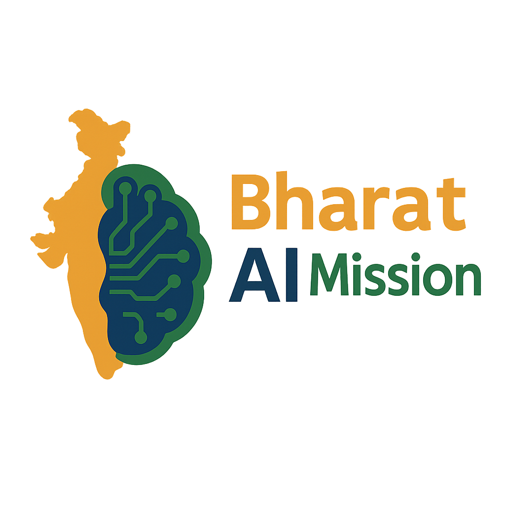

🗂️
Datasets & language resources
Text, speech, translation, OCR, instruction-tuning and other resources, with language and licence information wherever documented.
Browse dataset catalogue ↗
Bharat AI MissionBharat AI CommonsA community-powered discovery and contribution hub for Indian-language AI datasets, models, benchmarks, tools and real-world use cases.
India has a vibrant and growing AI ecosystem, but useful resources are scattered across research labs, universities, public platforms, GitHub repositories and model hubs. Discoverability, documentation, comparable evaluation and contribution pathways can still be difficult—especially for students and first-time contributors.
Bharat AI Commons brings the ecosystem into one navigable place. It is an open, evolving catalogue—not a replacement for original projects or their licences.
Shared infrastructure for India’s open-source AI ecosystem, starting with Indian-language resources and expanding through community contribution.
We aim to make knowledge easier to find, quality easier to assess, and participation easier to begin—while preserving source attribution, licence terms and responsible-use context.
Explore the GitHub repository ↗One entry point to the resource categories that help India build, evaluate and deploy AI for its many languages and contexts.
Text, speech, translation, OCR, instruction-tuning and other resources, with language and licence information wherever documented.
Browse dataset catalogue ↗Explore models for translation, speech, transliteration, language understanding and generation, with links to original model cards.
Explore model cards ↓Find evaluation sets and protocols; document what a benchmark measures, which languages it covers and where its limitations lie.
Browse benchmarks ↗Discover annotation, data preparation, evaluation and language technology tools that can help teams build responsibly.
Explore tools ↗Share practical guidance on consent, privacy, data provenance, licensing, safety, representation and evaluation quality.
Explore responsible AI ↗Collect community examples for education, agriculture, public services, accessibility, healthcare and local-language access.
Suggest a use case / issue ↗Explore state and Union Territory boundaries, then inspect documented resource signals. The map is designed to reveal catalogue coverage—not to claim that resources originate in the state where a provider is based.
Choose a state to see the current demonstration catalogue signals. Use the filters to switch between dataset, model and benchmark coverage.
Search the starter discovery list. Open each source for its canonical details, licence, intended use and model/dataset card. Catalogue entries are discovery leads; verify the current source page before use.
Live records are loaded from committed catalogue CSV files in the repository’s main branch. Inclusion does not imply independent verification. Always check upstream sources, licences, access conditions and model/dataset cards. Add or update records through GitHub contributions.
A curated starting point to explore complementary research, public platforms and community efforts. Inclusion here is for discovery, not an endorsement.
Research and open resources across Indian-language translation, speech, transliteration, language understanding and generation.
Explore AI4Bharat ↗India’s National Language Translation Mission platform for language services, APIs, datasets, models and contribution pathways.
Explore BHASHINI ↗Explore public participation in language data creation and annotation through BHASHINI-related community programmes.
Find contribution pathways ↗Discover additional corpora, model repositories and research collections through the IndicNLP resources directory.
Browse resources ↗Browse original model demos and information on Indic translation, ASR, TTS, transliteration and language models.
Open model hub ↗Community-maintained geospatial data and boundaries. Useful for understanding map sources and contributing corrections.
Explore DataMeet Maps ↗You do not need to be an AI researcher or an experienced GitHub user. Clear documentation, careful source checking and language expertise are valuable contributions too.
See the folder structure, catalogue and open issues to understand what is already tracked.
Open repo ↗Suggest a missing model, improve a source link, add a language tag or help verify a licence.
Browse issues ↗Fork the repository, edit a file, commit your change and open a pull request for review.
GitHub beginner guide ↗Use the template, cite the original source, respect licences and label uncertain information honestly.
Read CONTRIBUTING.md ↗Help verify entries, add source citations, describe use cases or translate documentation.
Submit datasets with source, languages, tasks, licence, access method and known limitations.
Open datasets folder ↗Record canonical model-card links, supported languages, model family, task, licence and evaluation.
Open models folder ↗Suggest a problem where open-source AI and local-language resources could make a practical difference.
Suggest an idea ↗